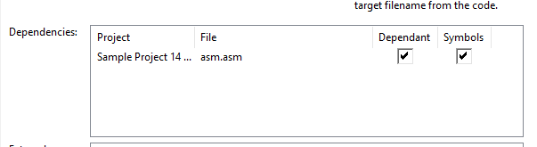

It's possible to include assembly symbols in BASIC programs. This requires a bit of setup.
Let's take a look at an example:
* = 16384
ASM_START
inc $d020
ldx #0
ldy #1
lda #1
ANOTHERLABEL
sta $0400,x
inx
bne ANOTHERLABEL
rts
10IFA=0THENA=1:LOAD"ASM.PRG",8,1
20SYS{ASM_START}
30?"HELLO WORLD!"
40?"LABEL ANOTHERLABEL = {ANOTHERLABEL}"
50?"THIS SHOULD SHOW 49152: {$C000}"
60DATA1,2,3,4,5
C64Studio interprets macros (e.g. texts inside squiggly braces {, } ) in three ways:
1) Predefined keywords for control keys or PETSCII replacement commands
2) A included symbol name
3) A literal value/expression

Symbol names are included via the "Compile Target" property pane of the BASIC file. Check "dependant" and "symbols" on an ASM file.
In this example both the labels "ASM_START" and "ANOTHERLABEL" are included via dependency and the BASIC file compiles with the inserted (decimal) value of the labels.
Now it's easy to relocate the assembly and automatically have the BASIC code adjust to the new address.